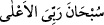
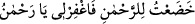
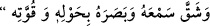

okuyana ve dinleyene hemen secde etmek vâcibtir.” (Hanefîlere göre tilâvet secdesi
vâcibtir. Diğer üç mezhebe göre ise sünnettir. Ancak, secde âyetini namazın dışında
okuyan ve dinleyen kimse için Hanefî mezhebinde geniş zaman içinde yapılması câiz
görülmüştür.)
Zarûret olmaksızın tilâvet secdesini geciktirmek mekruhtur. Oturan kimsenin tilâvet
secdesini yapmak üzere ayağa kalkması tekbir getirip secdeye kapanması, secdede
namazda olduğu gibi tesbih etmesi, sonra tekbir getirip ayağa kalkması, sonra da tekrar
oturması müstahabdır. Çünkü ancak böyle bir davranışla mükemmel bir secde mümkün
olabilir.
En sahih görüşe göre secdede üç defa “ “Sübhane Rabbiye’l-A’lâ”
denir. Bir rivayete göre “ “Hada‘tü li’r-Rahman, fağfir lî ya
Rahman” denir. Başka bir rivayete göre ise “” “Ya
mukallibe’l-kulûb sebbit kalbî alâ dinike” denir. el-Esrâru’l-Muhammediye müellifi,
kendisinden nakledilen bir habere göre hatiften duyduğu bir emre uyarak bu son duanın
okunmasını tercih etmiştir.
Rasûlullah (s.a.v.) tilavet secdesinden sonra birkaç kez


“Secede vechî lillezi halâkahû ve savverahû fe-ahsene sûretehû ve şekka sem‘ahû
ve basarahû bi-havlihi ve kuvvetih” yani “Yüzüm, gücü ve kuvveti ile kendisini
yaratan, güzel bir şekilde şekillendiren, kulağına duyma ve gözüne görme kudreti
veren Allah’a secde etti.” derdi. Sonra da
“Fe tebârakellahu ehsenu’l-hâlıkîn. Allahümme’ktüb lî bihâ ındeke ecran, ve da‘
annî bihâ vizren, vec‘alhâ lî ındeke zühran ve tekabbelhâ minnî kemâ tekabbelte
min abdike Davûd aleyhi’s-salâtü ve’s-selâm” derdi. Bunun manası; “Yaratanların en
güzeli olan Allah ne yücedir!” (el-Mü’minûn, 23/14) Bu secde ile katında bana ecir
ver, onun sâyesinde günahımı affet, onu katında benim için sakla ve Davûd (a.s.)’ın
secdesini kabul ettiğin gibi onu benden kabul buyur.” demektedir.[163]
İbn Fahreddîn er-Rumî der ki: İsrâ suresindeki secde ayetini okuyan kimse secde
yaptığı zaman duasına Cenab-ı Hakk’ın bu surede secde edenlerden naklen zikrettiği ve
güzel gördüğü